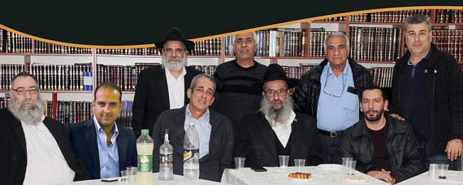

Appreciation for the Shliach of the Rebbe
I was inspired by the Chanuka holiday to meet with a shliach and eight of the “candles” that he lit. I was moved to hear their experiences with the Rebbe, in the present and the past, about their love for the shliach and the shliach’s love for them, the spirit of shlichus that exudes from the shliach and infects the mekuravim who see themselves, each in his own way, as shluchim who are bringing the Geula.

Chaim Daniel Halevy – teacher of national geography and history
Chaim Madar – old-time immigrant from France, special education teacher
Aharon Farchi – Chabad Chassid and a sofer
Motti Basel – carpenter
Avrohom Melamed – electrician
Danny Chein – photographer
Avrohom Aharoni – Chabad Chassid and computer technician (his young son Shneur Zalman was there too)
Einav Cohen – director of a stock market investment group
In the center sat Rabbi Yoel Yemini, shliach of the Rebbe in Kfar Saba, with eight of his mekuravim. He could be proud and pleased with the dozens of people who became involved in Judaism and Chassidus and close to the Rebbe thanks to his devoted work, but his body language displays discomfort. He is not used to being the center of attention; he is involved with giving.
I sat on the side and felt the love the mekuravim have for him. When he was asked to say a few words at the end of the interview, he choked up.
Tell me your first memory of Rav Yemini.
Chaim Daniel Halevy: I first met him when I walked into the Chabad House over two decades ago in order to check my mezuzos. I asked, “Who’s the rabbi here?” They referred me to Rav Yoel.
I remember that when I met R’ Yemini the first time, I was actually meeting the Rebbe again. I had been to the Rebbe in the 90’s, but for some reason I did not quite make the connection between Chabad and the Rebbe. But when I saw the Rebbe’s picture in the Chabad House, my heart suddenly opened. I instantly returned to that moving meeting with the Rebbe years before.
Chaim Madar: I was born and raised in France. As a child, I grew up in Chabad and that is what I knew. When I arrived in Eretz Yisroel, I first lived in Bat Yam where, like any graduate of Chabad, I looked for and found Chabad. I had a very positive connection with Rabbi Zimroni Tzik a”h and when we moved to Kfar Saba, the most natural thing was to look for Chabad. That’s how I got to R’ Yemini.”
***
One of the interviewees noted that the municipality of Kfar Saba named the park near the Chabad shul and the street alongside it, “Maalah Lubavitch” as a sign of appreciation for the work of Rabbi Yemini.
R’ Aharon Farchi: I met R’ Yoel 24 and a half years ago. My sister, Ronit Kalish, wife of Dr. Shlomo Kalish, became interested in Chabad and sent me to buy a Chitas. When I went to the Chabad shul, I saw R’ Yoel setting up and I mistakenly thought he was one of the employees or activists. We started talking and you could say the rest is history.
We really connected. R’ Yoel is my spiritual guide. He helped me with endless patience at the beginning of my teshuva process. He also helped me materially, among other things, by establishing me with a decent parnasa by teaching me safrus. Parenthetically, I must say that R’ Yoel is one of the most sought after sofrim. His unique handwriting and yiras Shamayim, as well as the fact that he writes k’sav Admor HaZakein, has brought him numerous prospective customers, but he nevertheless devotes his life to shlichus.
Motti Basel: I joined the Chabad shul in Kfar Saba 15 years ago and since then, the Chabad House is my home. I became very attached to R’ Yemini and feel very connected to the community.
***
R’ Yemini smiled and said, “Motti is a Chabadnik in the fullest sense; he just doesn’t look like one … He is the
‘sar ha’mashkim’ of the Chabad House. He has a boutique winery in which he manufactures wine and mashke and thanks to him, the farbrengens are well provided for. Aside from that, his wife is an ardent Chassida of the Rebbe.”
Avrohom Melamed: I met R’ Yoel in 5754. It began when I registered our oldest daughter at the Chabad school. R’ Yoel’s wife was the principal there until she reached her retirement, and he was the driving force of the school. Since then, we’ve come a long way together. He is my teacher and rabbi and a true friend.
Avrohom Aharoni: It is hard to remember our first encounter. I think it happened when I went to the Judaica store R’ Yemini ran in the city. I owe a huge debt to R’ Yemini, materially and spiritually.
The most interesting thing is that when I met the person who later became my wife, I was 30 and wasn’t rushing to get married. She presented me with an ultimatum: if we are getting married, then let us proceed, but if not, we will go our separate ways.
That was in 5760, after knowing her for two years. When I consulted with R’ Yemini about my ambivalence, he simply said, “Why don’t you fly to the Rebbe?”
To make a long story short, within two weeks I was at the Rebbe. It was an uplifting experience that began before Yud Shevat and continued for two months, at the end of which I returned to Eretz Yisroel and got married while wearing a sirtuk and hat.
Einav Cohen: My first memory of R’ Yemini is from the Lag B’Omer parade. I was a fourth grader in public school. I saw someone I did not know but who radiated warmth and love to me. I think this characterizes all Chabad Chassidim but is especially outstanding in R’ Yemini in the most deep and authentic way possible.
It’s contagious. You see a Chassid of the Rebbe who, with his eyes, with his gaze, with his way of relating, with his conduct, gives you the feeling that he cares very much about you.
THE REBBE REMEMBERED ME
Danny Chein (pausing from his picture snapping): My story is the other way around; the Rebbe sent me to R’ Yoel. I am an original Kfar-Sabaite. I was born here and attended the Chabad school here with Moreh Hirsh and Moreh Shneur Zalman Levin.
I had a pleasant voice and I sang at the Yud-Tes Kislev event in Kfar Chabad. One year, I think it was in 5730, I was sent together with a group of children to the United States where we sang for the Rebbe. It was a very special, exciting experience that is hard to put into words.
Years later, I left Eretz Yisroel and made a lot of money in the U.S. One day, I decided to go with a friend to meet the Rebbe. Just out of curiosity. When I passed by the Rebbe, the Rebbe said to me in Lashon HaKodesh with a Yiddish pronunciation, “Ha’makom shelcha b’Eretz Yisroel” (Your place is in Eretz Yisroel).
You have to understand that I am not a Chabad Chassid, and in those days, I did not sufficiently know and recognize the greatness of the Rebbe. I heard what he said but continued doing what I wanted. After several years, I went to the Rebbe again for dollars. The Rebbe gave me a dollar, looked right into my eyes and said, “I told you it’s better for you to be in Eretz Yisroel.”
I was stunned. I myself had forgotten what the Rebbe had told me. I couldn’t believe how out of the thousands of people whom he saw, that he remembered me and what he told me; and anyway, why should he care about me?
I felt a shudder go through my body and decided to return to Eretz Yisroel. I am here ever since, in Kfar Saba.
Upon my return, I immediately went to find out who is the Rebbe’s man here, and that is how I got to mori v’rabbi, the father of R’ Yemini who lived here at the time. I admired him with every fiber of my soul; I saw him as an amazing person, a man of all talents and of action. In those days, to see a Yemenite in such a position of responsibility was a vision of the End of Days.
After he passed away, I worried about who could replace him. I knew R’ Yoel and was apprehensive. How could this thin, little fellow successfully deal with the many challenges of Chabad in Kfar Saba? But I came to see that he has chochma, bina and daas and mainly, extraordinary heavenly assistance.
Since then, here I am, an assistant to R’ Yoel in Chabad’s work in Kfar Saba. I stand at the side of R’ Yemini, who is a man of chesed. Boruch Hashem, we have prevailed in a number of struggles as relates to the school. We went from an asbestos insulated trailer to a permanent structure with two spacious buildings, a wing for boys and a wing for girls. This is in addition to the preschools, shul, Chabad Houses and “Eshel b’Kfar.” R’ Yoel is a doer and I am so proud to be at his side and help him wherever possible.
STORIES AND MIRACLES
After hearing Danny’s story with the Rebbe, Chaim Daniel Halevy remembered a moving story that proved to him how much the Rebbe is here with us and giving us strength, as well as assignments and missions:
In 5750, I went on a trip to the United States with friends. We decided to go to the Rebbe to get a dollar and a bracha. I remember that we stood for many hours on line and I thought many times of giving up and leaving. I thought: You’re not wearing a kippa; you don’t belong here altogether. But something stronger than myself kept me there on line.
In the end, I entered a small hallway. Those were moments that cannot be put into words; a feeling like you are hovering. The Rebbe looks at you and you at him and you feel like you do-don’t exist.
A moment afterward, I decided that I must take this moment and immortalize it. I did something that I knew was forbidden. I got up my courage, took a few steps back and photographed the Rebbe. Just one picture. Then they pushed me and screamed that it was forbidden, and they blocked the Rebbe from my view.
It was a double roll of film with 72 pictures. Throughout New York I could not find any place that could develop the picture. It was only upon my return to Eretz Yisroel that I printed the picture which I gave as a gift to R’ Yoel.
I want to tell you – and I know that R’ Yemini doesn’t like to hear it, but every time I see R’ Yemini, I feel that I am seeing the one who sent him, the Rebbe. A person’s emissary is like himself.
R’ Aharon Farchi: Next Adar, we will celebrate our 40th anniversary. We waited many years for children. When we wrote to the Rebbe about it, we opened to a very special answer in the Igros Kodesh. When I asked R’ Yemini to translate it for us from the Yiddish, he was very amazed by the letter and the unusual answer.
It was a letter that the Rebbe had written to a Holocaust survivor who apparently had lost his wife and children in the war and remarried and had no children. According to the doctors, they could not have children. The Rebbe wrote to him that he promises that just as he saw miracles in the past, he would see miracles in the future and a doctor only has permission to heal but not to cause people to despair, and with G-d’s help they would raise the children with nachas.
Two years passed in the course of which, on the one hand, my wife cried every night, but, on the other hand, thanks to the letter and the nonstop encouragement and strengthening of emuna on the part of R’ Yemini and his wife, we finally had our wonderful daughter and then a son.
Motti Basel: When I was released from the army, my older brother was in the United States where he was sick and in the hospital. My other brothers suggested that since I was single and not tied down with a family, I should go to be with him and they would pay for my stay there.
This was in 5742. As soon as my brother was released from the hospital, he said to me, “Come, we’re going to the Lubavitcher Rebbe.” My brother is not a Chabadnik; he attended Sefardic yeshivos, which is why this pronouncement so surprised me.
It was Adar 5742 and when we arrived, we saw that the Rebbe was having a farbrengen. We stood on the pyramids and watched the Rebbe encouraging the singing as the crowd was ecstatic. It was a special spiritual experience.
When the Rebbe announced Mivtza Moshiach, about a decade later, my brother, who gives many Torah classes and is regarded as an esteemed rabbinic figure, spoke all over about the Rebbe’s prophecy of “hinei, hinei Moshiach ba.” I remember friends telling me, “Motty, your brother is nuts. He’s talking about Moshiach …” Boruch Hashem, today there is no rabbi who does not talk about Moshiach.
R’ Avrohom Aharoni: We did not have children either, for five and a half years after our marriage. What kept us going throughout those years were the answers from the Rebbe in the Igros Kodesh.
But it’s important that I clarify something. When you are closely connected to R’ Yoel Yemini, to whom a directive and word of the Rebbe is taken with such a deep simplicity, it affects you. The Rebbe explains that when a Jew has trust in Hashem, that is a direct cause for the bracha to come. The difficulty, of course, is trusting when the reality looks exactly the opposite.
When you are in a place that is entirely about pure faith, you feel that you have a guaranteed check from the Rebbe. “The Rebbe promised – the Rebbe will do it.” That’s a line that sums up our lives, from health to waiting for a bracha for children, all the way to the absolute trust in the Rebbe’s saying that Moshiach is already coming.
When we got this great gift from Hashem, Shneur Zalman, who is sitting here next to me, we got light in life. It is something that can’t be described; the joy. So too, with the general Geula, when the Rebbe will imminently be revealed, each of us will be able to understand the great happiness of seeing the fulfillment of all the blessings.
PERSONAL TOUCH
In what area of life does the work of R’ Yemini influence you most, in your personal lives, families, raising children or work?
Chaim Daniel Halevy: As I mentioned, I am a teacher of Israeli geography and history. I feel that I cannot only receive; I must give. So in the lessons that I teach, I also convey material about the Rebbe and Chabad. Sometimes, I may overdo it a bit and really get caught up, which has led to me being called to order by madame principal.
I decided to write about this to the Rebbe and you won’t believe what an on-the-mark answer I opened to. The Rebbe writes to a teacher who has 26 students in the classroom (exactly the number that I had at the time), who are not religious, “You need to draw them close to Torah and mitzvos. Do not be fearful!” This was such a precise answer of the Rebbe that it left no room for misinterpretations.
I decided to formalize the matter and since then, I am in charge of cultural encounters, in the course of which the students encounter various cultures. I decided to have the first such encounter in Kfar Chabad, in the house of the Rebbe [the duplicate of 770 that the Rebbe had built]. I took not only my class but the entire grade, 180 children, as each week, another class goes to Kfar Chabad. The students are told about the Rebbe’s house, about the Rebbe, Chabad and shlichus. They watch a video of the Rebbe and go into the “Rebbe’s room.” Whoever wants to can write to the Rebbe through the Igros Kodesh.
I’ll be candid with you that although I take them afterward – as per the guidelines imposed on me (by the Department of Education) – to places I am embarrassed to talk about, the students tell me, “Forget it, we don’t want to go in.” The most amazing thing is that although I put a lot into these outings (for example, we go to Nitzanim, in the Bar Kochba caves and other special, exciting places), on the feedback questionnaire that I pass around to the students at the end of the year, most of them write that the trip that had the greatest impact on them was the visit to Kfar Chabad.
Chaim Madar: What makes the greatest impact on me, with R’ Yemini, is learning the D’var Malchus with him every Erev Shabbos.
I remember that when we came across some of the unique expressions of the Rebbe about the Geula and the identity of Moshiach, R’ Yemini explained to us that people used to oppose the Rebbe’s campaigns, and nowadays, everyone does them. They used to oppose talking about Moshiach, and nowadays, everyone talks about Moshiach. The challenge today is in not being embarrassed about what the Rebbe says, that the Rebbe is Moshiach and he will redeem us.
This approach, of not being ashamed of who you are, in what you believe and in your values, is something that affects me in every area of life. That is something that you owe to yourself as a baal teshuva. When I am tested, I picture R’ Yemini and how he is not ashamed of the Rebbe and his messages; that gives me the strength to handle it.
THE REBBE BROUGHT US TO KFAR SABA
R’ Aharon Farchi: After we married, we lived in Tzfat. We wanted to go to Kfar Saba and help R’ Yemini, but my wife, who had attended Beit Chana, wanted to remain for a while near where she was finishing her schooling. We decided to rent an apartment in Tzfat until she completed her studies and then decide what to do.
When she finished her studies, my wife said that she loves Tzfat and wants to stay there. When I consulted with my mashpia, Rabbi Orenstein, he told me that the wife’s opinion is very important as far as choosing a place to live and to do as she wants. We decided to write to the Rebbe together.
It was Motzaei Shabbos, Parshas Mattos-Massei, and the letter we opened to was addressed to Rabbi Abelsky (letter # 1815). The Rebbe writes:
I was greatly pleased by what he wrote regarding his influence on the yeshiva bachurim who are in Kfar Saba, and certainly you will increase your efforts in this, and especially in the month of Elul… With blessings for success in his holy work, and that this should draw down blessing and success in his personal matters, and a k’siva va’chasima tova to him and his wife…
Needless to say, thanks to this explicit letter, my wife said she wants to move to Kfar Saba and since then we have been helping R’ Yemini in every way possible.
***
R’ Yemini added to what R’ Aharon said: Aharon really has brought many young people here and was mekarev them to the Chabad House, to the outreach work, to Chassidus and the Rebbe. He is the breath of life in our activities.
Motti Basel: I have to say that it’s really hard not to become enamored of R’ Yoel. I’ll tell you a story. One day, I went to the Chabad House together with my partner in the carpentry business. Upon getting to know R’ Yoel, he decided that he also wants to be a part of the action of the Chabad House in Kfar Saba. I can tell you that whatever R’ Yemini asks for, we cannot refuse …
***
One of the participants pointed out with a smile: The problem is that he doesn’t ask; he just does, and all of it is done modestly.
Avrohom Melamed: One day, R’ Yemini called me and said, “Listen, it looks like someone is breaking into the preschool. I see signs of it.” We went together in the evening and saw a homeless person squatting in the yard of the preschool. R’ Yemini, instead of yelling at him and sending him flying, arranged a place for him, “until he gets organized.”
It is impossible for stories like this not to have an effect on you, to try to emulate him, to be sensitive to others and to give wholeheartedly. A true shliach infects those around him with his genuineness.
Danny Chein: One Erev Pesach, I got a telephone call from a member of the city council. At the time, I was the president of the local Rotary Club, an international volunteer organization that holds meetings around the world. That city council representative reached out to me a few hours before the holiday and told me about two families in the city who he discovered didn’t have what to eat for the holiday, and he asked me if I could help them. Obviously, I opened up the warehouses and gave them whatever I could.
When I then turned to R’ Yoel, his response was practical and immediate. The first thing that he did was invite them for the seder night at the Beit Chabad, and he made sure that they were delivered hot meals for the whole holiday. You have no idea what a kiddush Hashem that made. The city council member was totally amazed by what the Beit Chabad and Eshel b’Kfar provided for these families. I will never forget that for the rest of my life. Since then, everybody in the municipal offices knows that if you need anything, the person to turn to is Rav Yoel Yemini.
Avrohom Aharoni: I agree with everything said by those who spoke before me. R’ Yemini has tremendous inner strength. I don’t think that an ordinary person could confront so many hindrances and obstacles, and still be totally focused on the goal. You see that a person who is battul to the Rebbe, receives kochos from the Rebbe, and that makes an impact on you.
My son, Shneur Zalman, who became bar mitzva a month ago, started up activities here for the younger children with the support of R’ Yemini. The rav provides him with the materials and the treats, and he prepares the lessons himself. Boruch Hashem, the work is already reaching the next generation…
Einav Chein: I want to speak specifically about the grandchildren of R’ Yoel and less about him, but to me this is the best example of a man who is filled with light, and how the influence of such a person does not stop with him.
I am talking about the children of his daughter and son-in-law, R’ Yaakov Mizrachi. I look at them and know that I could only dream that my children would have such a chinuch. You see in them the image of their grandfather, his conduct, his way of speaking, and his devotion. When a grandfather shines through his grandchildren, to me that is the most amazing and spellbinding thing.
The most inspiring example of that is to see a child with inner strengths who is looking for ways to give and contribute to the Jewish people. I am in awe over how one raises a child, who in the natural way of things is involved in himself and his toys, to want to be a shliach and carry out the will of the Rebbe.
THE CHABAD HOUSE IN KFAR SABA
The central Chabad House in Kfar Saba opened in 5735 by Rabbi Nissim Yemini a”h and his brother, R’ Yaakov, with the encouragement of Rabbi Yisroel Leibov a”h, director of Tzach at the time.
Over the years, they received letters and brachos from the Rebbe which continue to give them strength today.
Rabbi Yoel Yemini, director of the Chabad House now, began working as an assistant to his parents and uncle. In 5741, after he married (his wife is director of N’shei Chabad in Kfar Saba), he officially began working alongside his father and uncle.
Starting in 5764, his daughter and son-in-law, R’ Yaakov Mizrachi, joined the shlichus in Kfar Saba.
Over the years, the work expanded and there are additional Chabad Houses in various neighborhoods in the city. In addition to Chabad Houses, the existing schools were expanded. The school, which was started by the Reshet in 5712 and was run for many years by Mrs. Yemini, has doubled. Four preschools were opened, as well as a chesed organization called Eshel b’Kfar, which includes a soup kitchen, a warm-winter project, school supplies, clothing distribution, an institute to celebrate b’nei mitzva at the Kosel, and more. All this is in addition to Rav Yemini’s shlichus in schools throughout the year.
Today, the Chabad community in Kfar Saba under the leadership of Rav Yemini numbers about 30 families, most of them baalei teshuva and mekuravim, residents of the city.
Tzfasman. "Appreciation for the Shliach of the Rebbe." Beis Moshiach, no. 1146 (December 20, 2018).